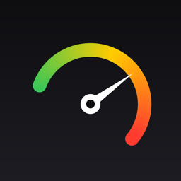
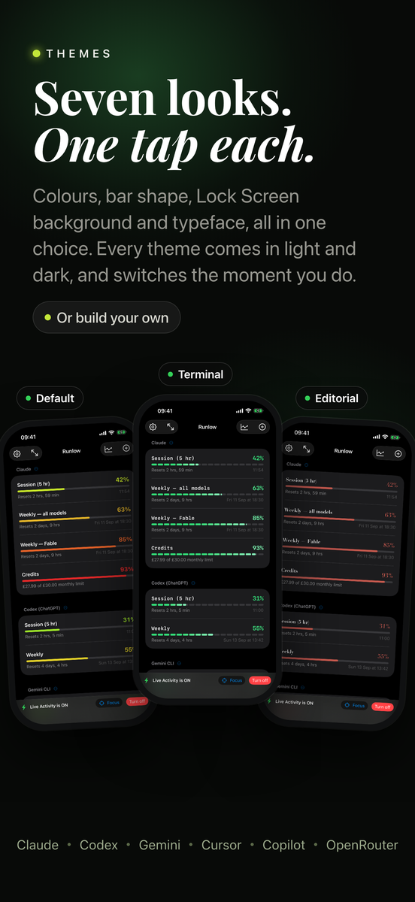
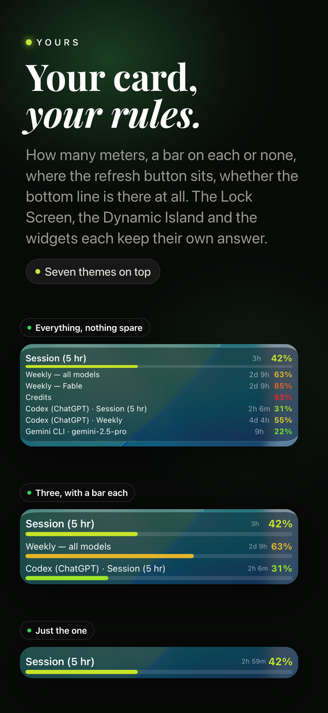
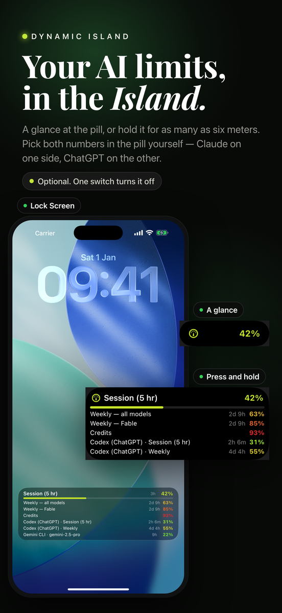
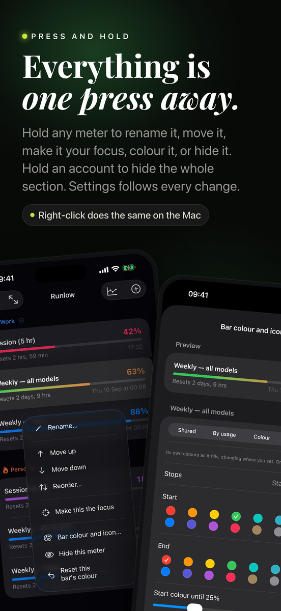
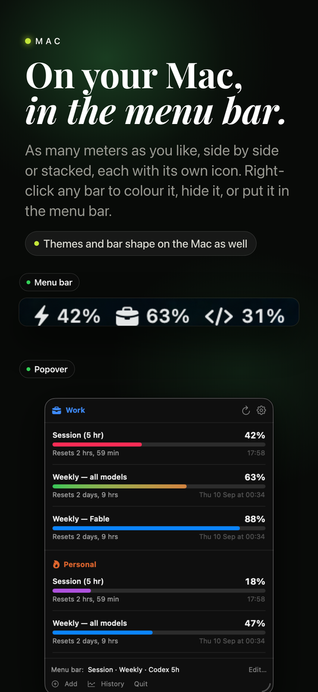
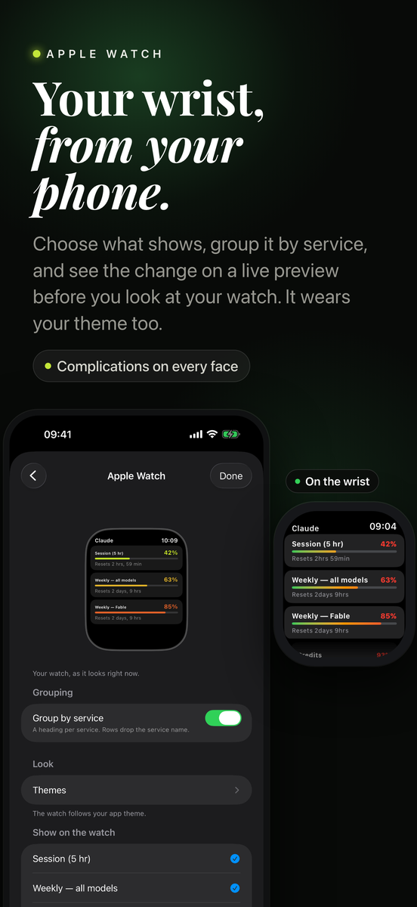

Runlow
Every AI limit you are paying for, on one screen.
Get it on the App Store · £1.99





Every AI subscription has a limit, and not one of them makes it easy to see. Runlow puts Claude, Codex, Gemini, Cursor, GitHub Copilot and OpenRouter side by side as clean colour coded meters that fill from green to red as you use them, so you know where you stand before you hit a wall in the middle of something.
Six services, one glance
Connect any of them, or all of them. Nothing is Claude first and nothing is hidden behind a tier.
- Claude: your 5 hour session, weekly caps, per model lanes and extra usage credits, across as many accounts as you have
- Codex (ChatGPT): 5 hour session and weekly limits
- Gemini CLI: remaining quota per model, picked up automatically as Google adds or retires models
- Cursor: plan usage
- GitHub Copilot: premium request allowance remaining
- OpenRouter: credit balance, key spend, and what you have spent today, this week and this month
Your Lock Screen card, your way
Pin up to eight meters to the Lock Screen as a Live Activity. Choose the headline meter, how big the top row is, whether every meter gets a bar, and where the refresh button sits. Reset times count down live. The Dynamic Island shows the two numbers you pick, in their own colours, and expands to as many as six meters.
Seven themes and a setup wizard
A theme sets the bar colours, the bar shape, the typeface and the background in one tap, and follows light and dark on its own. Nine typefaces. Bars in one piece or in blocks like a fuel gauge. Colour bars by the theme, by usage, by usage as a gradient along the bar, or give any meter its own colour. The setup wizard walks you through the card one question at a time with your own meters in front of you, and cancelling puts everything back.
Widgets, your wrist and the menu bar
Small, medium and large Home Screen widgets, the large one holding up to twelve meters with their bars and every one with a refresh button, plus Lock Screen widgets. Your focus meter on Apple Watch, in your theme. On the Mac the meters live in the menu bar next to the clock, as many as you like, side by side or stacked, with a right-click to add or remove any of them, and the same themes and wizard. On Apple Vision Pro, a dashboard window and a compact panel you can park beside your work.
Warned before you hit the wall
Optional notifications before you hit a wall, and again the moment a limit resets, so a long session does not end in a surprise. History charts every meter over time, with an optional forecast worked out from your own readings, a payments log for what you pay each service, and CSV export.
Nothing leaves your device
No account to create, no server of ours, no analytics, no tracking. Runlow reads your usage on your own device and keeps it there. Your keys live in the Keychain, and your settings can follow you between devices through your own iCloud if you choose. A Privacy page in the app lists every address it contacts and why.
Get Runlow
One purchase covers iPhone · iPad · Mac · Apple Watch · Apple Vision Pro. No subscription, no account, no tracking.
Get it on the App Store · £1.99